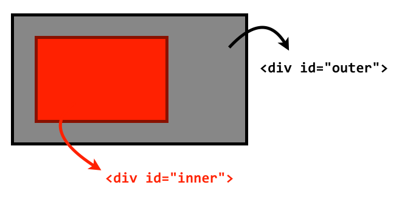
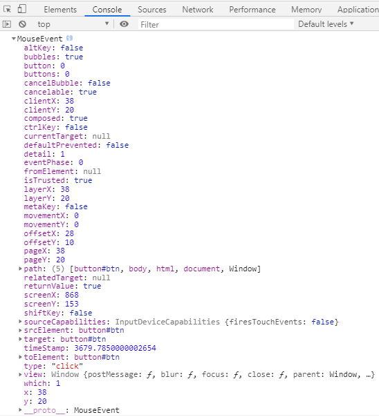
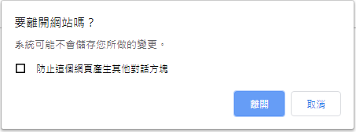

JavaScript - 事件
JavaScript 是一個事件驅動 Event-driven 的程式語言，當瀏覽器載入網頁開始讀取後，會馬上讀取 JS 事件的相關程式碼，但必須等到事件被觸發後，才會進行對應程式的執行
事件介紹
以下方的 Bootstrap 按鈕為例，當使用者點擊這個按鈕，並跳出另一個視窗， “點擊按鈕” 這件事就是 “事件” Event，而負責處理事件的程式被稱為 事件處理者 Event Handler，也就是 “啟動另一個視窗的顯示” 這個動作
事件流程
事件流程介紹
這裡有兩個 div 元素，外層是 .outer，內層是 .inner，當我們點擊 .inner 的時候，其實也同時在點擊 .outer，更廣義來說，其實也在點擊整個網頁
1 | <div id="outer"> |

事件流程指的就是 “網頁元素接收事件的順序”，而事件流程分成兩種機制
- 事件冒泡 (Event Bubbling)
- 事件捕獲 (Event Capturing)
事件冒泡 (Event Bubbling)
“事件冒泡” 指的就是從啟動的元素節點開始，逐漸 “由下而上” 傳遞，直到網頁的根節點 document
如下範例，當我們點擊 <div>click</div>，在 “事件冒泡” 的機制下，觸發順序為:
<div>click</div><body><html>document
1 |
|
事件捕獲 (Event Capturing)
“事件捕獲” 和 “事件冒泡” 相反，指的就是從啟動的元素節點開始，逐漸 “由上而下” 傳遞，從網頁的根節點 document 開始直到點擊的元素
同以上範例，當我們點擊 <div>click</div>，在 事件捕獲的機制下，觸發順序為:
document<html><body><div>click</div>
事件的註冊綁定
透過事件的綁定，可以指定 “事件處理器” handler 給事件，也就是當事件被觸發後會執行的動作
事件的綁定可以分為以下三種:
on-event處理器 (HTML 屬性)on-event處理器 (非 HTML 屬性)- 事件監聽
EventTarget.addEventListener()
on-event 處理器 (HTML 屬性)
我們可以透過加上 on + 事件名稱 的屬性在 HTML 元素上來註冊事件，但基於使用性與維護性，不建議使用此方法來綁定事件
1 | <button class="btn" onclick="alert('Hello World')"> click</button> |
on-event 處理器 (非 HTML 屬性)
像是 window 或 document 這種沒有實體元素的情況，還是可以透過 DOM API 提供的 on-event 處理器 來處理事件
1 | <button id="btn">Click</button> |
1 | var btn = document.getElementById('btn'); |
事件監聽 EventTarget.addEventListener()
事件監聽 EventTarget.addEventListener() 包含三個參數
- 事件名稱
- 事件的處理器
event handler(事件觸發時執行的 function ) - 布林值 : 如果沒有寫預設值就是
false代表 事件冒泡，反之，true代表 事件捕獲
1 | EventTarget.addEventListener('事件名稱', '事件的處理器(function)', true/false); |
指定多個 處理器 handler
事件監聽 .addEventListener 的好處事可以重複指定多個 事件處理器 event handler 給同一個元素的同一個事件
1 | var btn = document.getElementById('btn'); |
解除事件註冊 EventTarget.removeEventListener()
解除事件註冊 removeEventListener 與 事件監聽 addEventListener 一樣包含三個參數，分別是 “事件名稱”、”事件處理器” 和 “冒泡/捕獲”
但要注意的是，removeEventListener 要移除的事件要確定是與 addEventListener 綁定的是同一個 實體，否則無法移除
1 | var btn = document.getElementById('btn'); |
如果是透過變數將 事件處理 event handler 拉出來，兩者就會指向 “同一個實體”
1 | var btn = document.getElementById('btn'); |
事件處理器中的事件
當我們透過 addEventListener 來註冊事件時，會有三個參數，分別是 事件名稱、事件處理器 (Event Handler) 以及 捕獲/冒泡
事件處理器中的事件介紹
同時，事件監聽器 EventListener 會建立一個事件物件 Event Object，這個物件包含所有與事件有關的屬性，並以 參數 的形式回傳給 Event Handler
如下範例，參數 e 就是 事件物件，透過 console.log 我們可以查看所有與事件有關的屬性，e 是參數，所以當然可以自定義名稱
1 | <button id="btn">Click</button> |
1 | var btn = document.getElementById('btn'); |

typeof: 事件名稱target: 觸發事件的元素bubbles: 事件是否在冒泡階段觸發 ( true/false )pageX / page Y: 事件觸發時，滑鼠座標在網頁上的相對位置
取消預設行為 event.preventDefault()
如果我們需要在 <a> 或 <submit> 等上綁定事件，就需要適當的取消他們的預設行為
如下範例，我們想要在點擊這個連結的時候，瀏覽器執行 console.log('Google')，而不是直接連結到 Google 首頁，就可以使用 preventDefault() 來取消 <a> 的預設行為
1 | <a href="https://www.google.com" id="link">Google</a> |
1 | var link = document.querySelector('#link'); |
阻擋事件冒泡傳遞 enent.stopPropagation
當 “子元素” 和 “父元素” 有 相同的事件 ，我們希望觸發子元素的事件時不要觸發到父元素的事件，就可以使用到 event object 提供的另一個方法 event.stopPropagation 來阻擋事件向上冒泡
如下範例，有時候為了增加 checkbox 的靈活性，會使用 label 包住的寫法，當我們在 label 和 checkbox 上都註冊 click 事件時，會發現 label 上的事件執行了兩次
1 | <label id="label"> |
1 | var label = document.getElementById('label'); |
如上範例，label 會執行兩次是因為當我們點擊 label 時，瀏覽器會自動將 click 事件傳給 checkbox，而 checkbox 受到事件冒泡影響，又會將 click 傳給上層的 label，所以執行了兩次
要解決這個問題，只要在 checkbox 加上 e.stopPropagation()，就可以阻擋 checkbox 向上傳遞的事件冒泡
1 | var label = document.getElementById('label'); |
事件中的自己 this 與 e.target
this: 透過this可以找到 觸發事件的目標 元素，也就是event.currentTargete.target: 透過e.target可以找到 觸發事件的元素- 大部分的情況
this會和e.target指向同一個元素
1 | <label id="label"> |
1 | var label = document.getElementById('label'); |
- 但如果是 “傳遞” 的情況兩者指向的元素就會有所不同
1 | var label = document.getElementById('label'); |
前兩組結果可以輕易理解為 label 和 checkbox 各觸發一次 click 事件
但最後一組結果就不一樣了，由 1 可以判斷這組結果是 checkbox 經由 “事件冒泡” 傳遞給 label 所觸發的事件
這裡的 e.target 指的是 觸發事件的元素，也就是觸發事件冒泡的 checkbox
而 this 指的是 觸發事件的目標元素，也就是事件冒泡 的目標 label
事件指派 Event Delegation
事件指派 指的是透過前面介紹的 “事件流程” 和 “單一事件監聽器” 來處理多個事件目標
如下範例，我們為 myList 的 li 綁定 click 事件，就要透過 for 迴圈來一一綁定
1 | <ul id="myList"> |
1 | // 取得容器 |
這時會發生一個問題，新增的 li 並不會有 click 事件的註冊
如果每次新增新的 li 都要新增新的事件監聽 addEventListener，不僅沒完沒了，沒有移除舊的事件監聽可能會發生錯誤
因此透過 事件指派 Event Delegation 是比較好的做法
如下範例，我們是將 click 事件改由外層的 myList 來監聽，利用事件傳遞的原理來取得目標結點，所以後續新增的 li 也會有 click 事件的效果
1 | // 取得容器 |
事件的種類
事件的種類分為以下幾種
- 介面相關事件
- 滑鼠相關事件
- 鍵盤相關事件
- 表單相關事件
- 特殊事件
- 自訂事件
介面相關事件
介面事件不一定與使用者對 DOM 的操作有關，反而大多數與 window 物件比較相關
load
註冊在 window 物件上，指的是網頁資源 (包括 CSS、JS、圖片等)，全數載入後觸發。
如果是 img 元素的 load 事件，就代表是在圖片載入後觸發
unload 與 beforeunload
unload 和 beforeunload 分別會在離開頁面或重新整理時觸發，beforeunload 會跳出對話框詢問使用者是否確定要離開

error
error 事件會在 document 或圖片載入錯誤時觸發。
基於維護性考量，大部分的 JS 建議都使用 非侵入式 JS 的寫法，也就是另外寫 <script>，但 error 反而很適合以 on-event handler 的寫法來處理
1 | <img src="image.jpg" onerror="this.src='default.jpg'"> |
如上範例，當 image.jpg 不存在的時候，就會觸發 error 事件，此時會透過 this.src 將 src 屬性替換成 default.jpg
如果是在 load 完成後才註冊 error 事件，就只會看到破圖的結果，因為 error 事件不會再度被觸發，所以後來掛上的 handler 形同虛設
resize
當瀏覽器 window 或指定元素 element 的 “尺寸變更” 時觸發
scroll
當瀏覽器 window 或指定元素 element 的 “卷軸被拉動” 時觸發
DOMContentLoaded
和 load 事件類似，不同的是，load 是在網頁的所有資源載入後才會觸發，而 DOMContentLoaded 是在 DOM 結構被完整的讀取和解析後就會被觸發
一般來說如果將 <script> 放在 <head> 之間，會發生讀取不到 DOM 的問題，但如果使用 DOMContentLoaded，就可以排除這個問題了
1 | <head> |
滑鼠相關事件
click
當滑鼠點擊某元素時觸發
dblclick
當滑鼠 “連點兩次” 時觸發
mouseenter/mousemove/mouseleave 不支援事件冒泡
這三個事件並 “不支援事件冒泡”，也就是無法藉由綁定父元素來觸發子元素的事件
mouseenter: 當滑鼠 “移入” 這個元素時觸發mousemove: 當滑鼠在這個元素內 “移動” 時觸發mouseleave: 當滑鼠 “移出” 這個元素時觸發
mouseover/mouseout 支援事件冒泡
和 mouseover/mouseout 對應的就是 mouseenter/mouseleave，但不同的地方在於 mouseover/mouseout 支援冒泡事件，也就是可以藉由綁定父元素來觸發子元素事件
鍵盤相關事件
鍵盤事件分成三種，大多數情況會註冊在 input 上
keydown
當 “壓下” 按鍵時觸發
keypress
當按著不放時會連續觸發
keyup
當 “放開” 按鍵時觸發
如果同一個元素綁定了這三個鍵盤事件，觸發順序為 keydown=>keypress=>keyup
keycode
每個按鍵都有自己的代號，透過 keycode 可以知道每個按鍵的代號，進而指定按鍵來觸發
表單相關事件
input
當 input、textarea 以及帶有 contenteditable 的元素內容被改變時，就會觸發 input 事件
change
當 input、select、textarea、radio、checkbox 等被改變時觸發。與 input 不同的是， input 事件會在輸入框輸入內容的當下觸發，而 change 事件則是在目前焦點離開輸入框後才觸發
submit
當表單被送出時觸發，通常表單驗證都會在這一步處理，驗證未過則 return false
focus
元素被聚焦時觸發
blur
當元素失去焦點時觸發
特殊事件
Composition Event 組成事件
透過 組成事件 Composition Event，可以將輸入的過程分的更細，針對每個環節綁定不同的事件。組成事件分為以下三種:
compositionstart
輸入框內開啟輸入法，且 正在拼音時 觸發
compositionupdate
輸入框內開啟輸入法，且 正在拼音時 或 選字時 更改了內容觸發
compositionend
輸入框內開啟輸入法，且拼字獲選字 完成 時觸發
自訂事件
- 使用
Event constructor建立 - 同樣透過
addEventListener來監聽 - 由
dispatchEvent決定事件觸發的時機
1 | // 自訂事件 |
- 如果要在自訂事件內增加更多資料，可以改用 CustomEvent 來自訂事件，Event Handler 就可以透過 event 來接收
1 | // 自訂事件 |
其他事件
其他的事件可以參考 MDN 的 Event reference